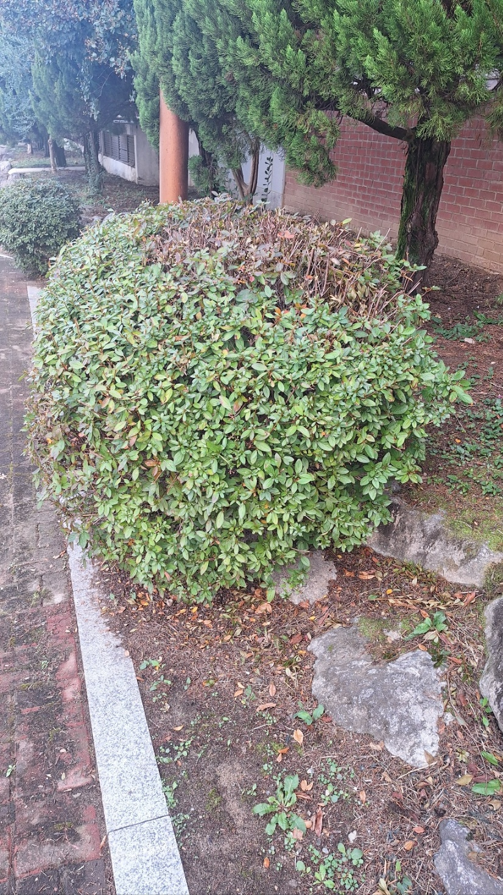

회양목 소개
안녕하세요! 이번에는 학교 화단과 낮은 울타리에서 자주 만날 수 있는 회양목을 살펴보겠습니다.
작은 잎이 촘촘하게 모여 있어 멀리서 보면 둥글고 단단한 녹색 덩어리처럼 보입니다. 하지만 잎의 배열과 관리 방식에는 흥미로운 특징이 숨어 있습니다.
회양목이란?
작고 두꺼운 타원형 잎이 마주나며, 가지치기 뒤에도 새싹이 잘 돋는 상록 활엽 관목입니다. 촘촘하게 다듬을 수 있어 화단 경계나 낮은 울타리로 많이 이용됩니다.

회양목 기본 정보와 계절 변화
회양목 기본 정보
회양목을 찾아볼 수 있는 곳
회양목은 학교 화단, 공원, 건물 주변의 경계 식재 등에서 관찰할 수 있습니다. 잎이 작고 가지가 촘촘해 낮은 생울타리나 정돈된 조경 형태를 만드는 데 자주 쓰입니다.
계절마다의 모습
회양목은 상록 관목이므로 계절이 바뀌어도 잎을 유지합니다. 봄에는 새잎과 새가지가 나오고, 여름에는 잎이 빽빽해지며, 가을과 겨울에도 낮은 울타리 형태와 잎을 관찰할 수 있습니다.
새잎과 새가지가 자람
촘촘한 잎이 무성해짐
상록 잎과 둥근 수형 유지
잎을 유지하며 화단 경계 역할
신기한 사실: 단단한 목재
회양목은 목재 조직이 치밀하고 단단해 예전부터 도장이나 작은 목공예품의 재료로 활용되었습니다. 작은 나무지만 목재의 밀도가 높은 편이라는 점이 특징입니다.
IT·공학 연결: 토양 수분 센서
회양목처럼 얕은 뿌리 주변의 흙이 마르지 않도록 관리할 때 토양 수분 센서를 활용할 수 있습니다. 저항식 센서는 전극 사이의 전기 저항 변화를 측정하지만 전극 부식이 생길 수 있습니다. 정전용량식 센서는 흙의 유전율 변화를 측정해 전극 부식 문제가 비교적 적습니다.
생명과학 연결: 알칼로이드와 안전성
회양목에는 사이클로부신 계열을 포함한 알칼로이드 성분이 보고되어 있습니다. 잎과 가지를 먹어서는 안 되며, 식물 추출물이 의약품으로 인정되려면 유효성과 안전성에 대한 엄격한 검증이 필요합니다.
회양목와 생태계·탄소
회양목이 생태계에 미치는 영향
회양목은 낮은 울타리나 화단 가장자리에 녹지를 형성합니다. 작고 촘촘한 잎과 가지는 지표 가까이에 작은 그늘과 구조적 공간을 만들 수 있습니다. 식재 규모와 주변 식물의 다양성에 따라 생태적 역할은 달라집니다.

회양목의 이산화 탄소 흡수량
회양목은 광합성을 통해 이산화 탄소를 흡수하지만, 개체별 연간 흡수량은 식물의 크기와 생장량, 관리 상태에 따라 달라집니다. 현재 조사한 개체의 크기와 연간 생장 자료가 없으므로 정확한 수치를 표시하지 않았습니다.
개체 크기 · 줄기와 가지의 생체량 · 연간 생장량
비교 단위: kg CO₂/년

흡수량과 배출량 비교
나무 한 그루의 연간 흡수량과 시설의 연간 배출량을 비교하려면 같은 단위와 같은 기간으로 환산해야 합니다. 면적당 흡수량(t/ha/년)을 개체당 흡수량으로 바꾸려면 식재 면적과 개체 수 등의 정보가 추가로 필요합니다.
 시설의 탄소 배출
시설의 탄소 배출시설 사진은 비교 개념을 위한 예시이며, 특정 발전소의 배출량을 뜻하지 않습니다.
회양목가 우리에게 미치는 영향
학교 화단과 공원의 경계를 정돈하고, 사계절 녹색 공간을 유지하는 데 도움을 줍니다. 동시에 뿌리 주변의 토양 수분과 식물 자체의 안전성도 알아두어야 합니다.
작은 관목도 생태와 기술을 연결하는 관찰 대상이 될 수 있습니다.